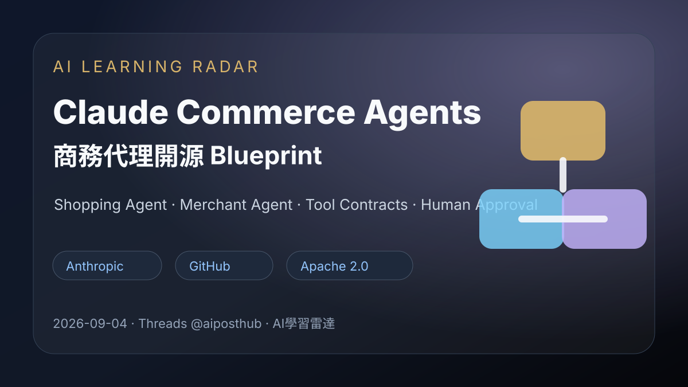
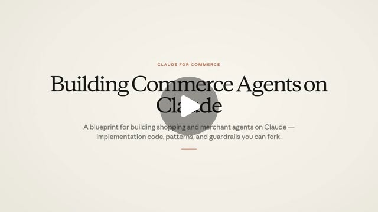
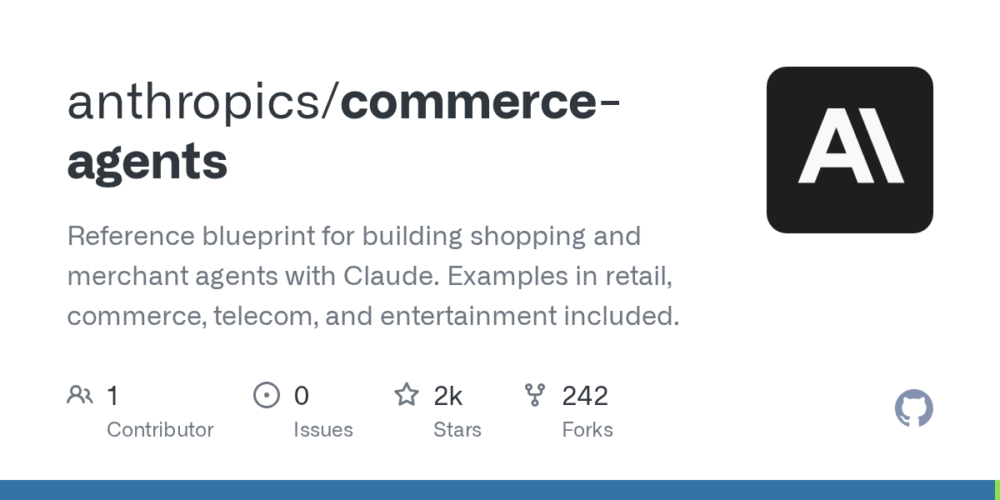
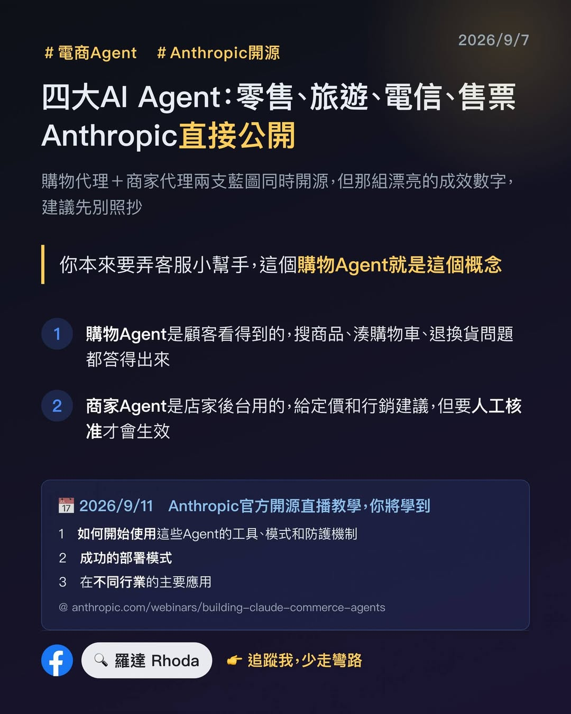

Threads｜AI郵報：Anthropic 開源 Claude Commerce Agents 商務代理 Blueprint

一句話摘要
AI郵報分享 Anthropic 開源的 Claude Commerce Agents：一套用 Claude 建構購物 Agent 與商家後台 Agent 的 reference blueprint，涵蓋 prompt、skills、tool contracts、gates、人類審核與多個垂直 demo。這則值得保存，因為它把「AI Agent 做生意」從聊天機器人升級成可嵌入商務流程的開源架構範例。
來源脈絡
- Threads 分享連結：https://www.threads.com/share/BBRE4eGFiO/
- Canonical：https://www.threads.com/@aiposthub/post/DczxmdOkcO_
- 作者：AI郵報（@aiposthub）
- 貼文可見主文：「Claude 這次連『幫你做生意的 Agent』都直接開源了」，介紹 Claude Commerce Agents 可用來做購物 Agent、商家 Agent、客服與交易流程 Agent 的開源 Blueprint。
- 貼文附帶 GitHub 專案：anthropics/commerce-agents。
代表畫面

封面文字為「Building Commerce Agents on Claude」，副標強調這是一套 building shopping and merchant agents on Claude 的 blueprint，包含 implementation code、patterns 與 guardrails。
GitHub 專案重點

- Repo：https://github.com/anthropics/commerce-agents
- Owner：Anthropic（anthropics）
- GitHub description：Reference blueprint for building shopping and merchant agents with Claude. Examples in retail, commerce, telecom, and entertainment included.
- 主要語言：Python，並包含 examples、plugins、shopping-agent、merchant-agent、commerce-common、tests 等目錄。
- License：Apache License 2.0。
- README 定位：兩種 commerce agents，一種是嵌入商家 app 給顧客使用的 shopping agent，另一種是給內部員工管理後台的 merchant agent。
- Demo verticals：retail、travel、telecom、entertainment。
- 執行環境：Python 3.11+、Node 22、ANTHROPIC_API_KEY。
- 也提供 Claude Code plugin，用於 scaffold / add commerce flow / author evals / review commerce agent。
兩種 Agent 的分工
### Shopping agent
面向顧客，可處理搜尋商品、比較、規劃、填購物車、回答訂單與政策問題，並記住顧客提供的偏好。部署時需要把 `StorefrontBackend` 接到真實 catalog、cart、order、policy 等系統。
### Merchant agent
面向商家內部，可解釋營運表現、維護 listing、處理庫存與訂單 alerts、定價促銷、草擬 campaign。README 特別強調 merchant write 會先 staged，需由人類審核介面批准後才套用。
為什麼值得收進 AI 學習雷達
- 它把 AI Agent 從「能聊天」推進到「可嵌入商務流程」：購物、客服、庫存、訂單、定價、行銷。
- Blueprint 不只給 demo，還把 prompt、skills、tool contracts、gates、memory、grounding、presentation、executor frame 等工程切面拆出來。
- 很適合未來課程或工作坊示範：如何把 Claude agent 放進真實業務流程，同時保留人工審核與安全護欄。
- 對欒帥的 Hermes / LINE / 知識庫工作流來說，可延伸成「課程助教 Agent」、「報名與客服 Agent」、「資料庫查詢 + 審核式寫入 Agent」等模式。
導入前檢核
- 是否真的需要可執行交易流程，還是 FAQ/RAG 就足夠？
- 哪些工具呼叫可以自動執行，哪些必須 staged + human approval？
- 商品、訂單、會員、付款與客服資料的權限邊界是否清楚？
- 是否有 evals 來測試錯誤推薦、越權操作、政策違規、價格錯誤與隱私洩漏？
- 是否能用 read-only demo 先驗證，再逐步接上真實 backend？
後續可實作方向
- Clone repo，先跑 retail demo，比較 shopping agent 與 merchant agent 的 UX 差異。
- 研究 Claude Code plugin 如何 scaffold commerce agent，轉成 Hermes Agent 的教學案例。
- 把「staged writes + human approval」抽成通用架構，套用到 Google Sheets 報名名單、課程客服、知識庫內容發布。
- 補一篇實測筆記：Anthropic blueprint 的 package layout、prompt/skills/tool contract/gates 如何互相分工。
Facebook 後續補充：成效數字要和來源分開看
2026-09-09，Facebook 群組「Claude Taiwan」的羅達老師轉貼一則補充，原始分享連結已解析至：
https://www.facebook.com/groups/1224997379198346/posts/1388359976195418/
貼文把 Commerce Agents 說成四種產業的開源電商 AI Agent，並整理兩個角色：
- 購物 Agent：嵌入零售商 App 或網站，搜尋商品、組合推薦、記住偏好、顯示購物車與比較表，並回答訂單、退換貨和退款政策問題。
- 商家 Agent：查看銷售表現、庫存警訊、定價與行銷活動；商家端寫入先暫存，必須經人工核准才會生效。
這些描述大致符合 Anthropic `anthropics/commerce-agents` README 的架構。不過 GitHub README 也提供了幾個重要限制：所有品牌、公司、產品和人物都是虛構的 ACME；示範不會下單、扣款或修改真實商品；checkout 只是交給宿主完成；merchant write 會 staged，部署者仍需自行負責授權、商業規則與合規。
### 官方 webinar 查核
Anthropic 官方 webinar 頁面標示「Building Claude Commerce Agents」，日期為 2026-09-10，內容會介紹 consumer 與 merchant agents 的 blueprint，涵蓋 retail、travel、telecom、entertainment，以及 auth、latency 和部署經驗。這支持「官方確實推出 blueprint 與相關說明活動」，但不代表任何商家導入後必然取得相同成效。
### 35% 與 60% 數字的查核界線
Facebook 貼文提到官方文章中的數字：「購物車金額最高多 35%」與「完成購買機率高 60%」。貼文作者也注意到，這組數字的實驗來源、樣本與商家資訊並不完整，並指出 PYMNTS 報導中的 60% 可能來自 Adobe Analytics 對「AI 導流訪客轉換率」的另一種統計。
因此本文不把 35% 或 60% 寫成 Commerce Agents 的已驗證 ROI。比較合理的做法是把它們標成廠商或媒體轉述的行銷／參考數字，導入前要求完整定義分母、樣本、期間、控制組、流量來源、退貨率與客服成本。

更新後的導入檢核
- [ ] 先用虛構資料或 read-only backend 跑 demo，不要直接接真實訂單與付款。
- [ ] 將 checkout、退款、價格、庫存和商品上架分成不同權限與 approval gate。
- [ ] 對轉換率、客單價、退貨率、客服轉人工率和毛利分別定義指標。
- [ ] 要求任何成效數字附上樣本、期間、控制組和資料來源。
- [ ] 以真實商家資料測試前，先檢查會員偏好、訂單和付款資訊的個資邊界。
原始連結
Facebook 分享連結：
https://www.facebook.com/share/p/1EZoSuQTL9/?mibextid=wwXIfr
Facebook canonical 貼文：
https://www.facebook.com/groups/1224997379198346/posts/1388359976195418/
Anthropic 官方 webinar：
https://www.anthropic.com/webinars/building-claude-commerce-agents
GitHub：